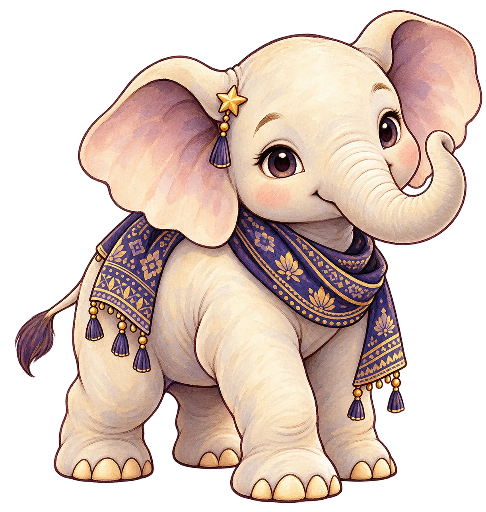
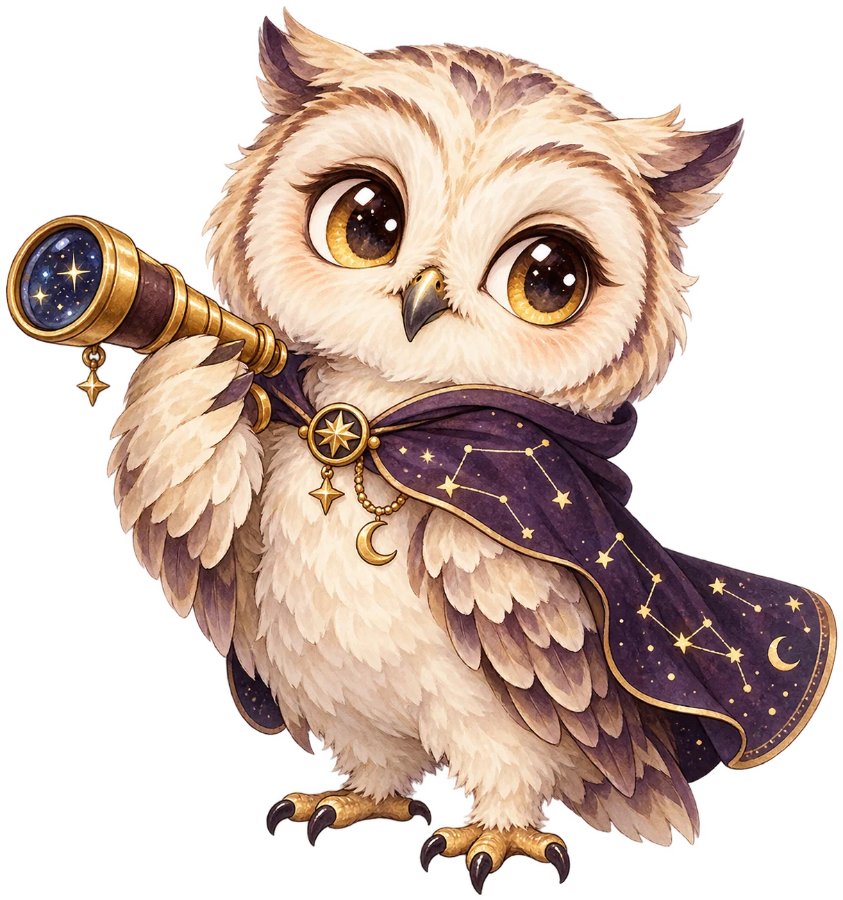
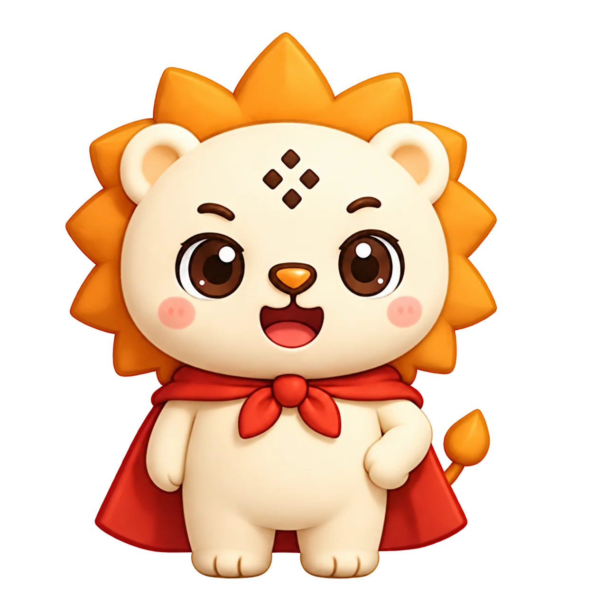
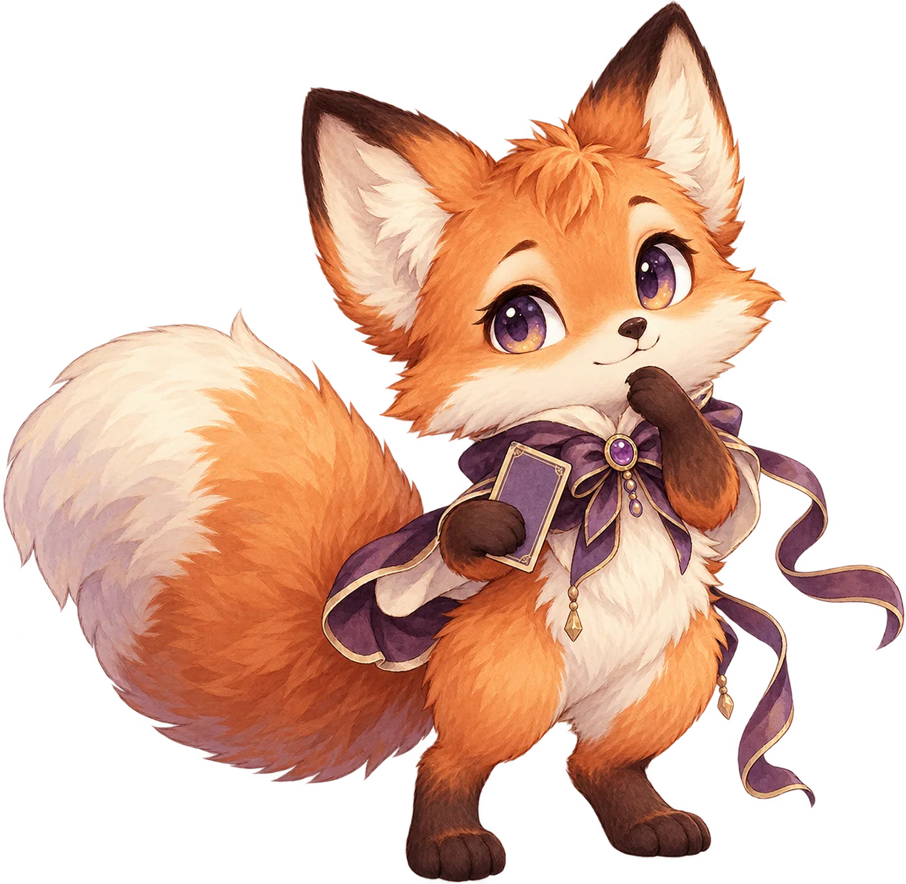
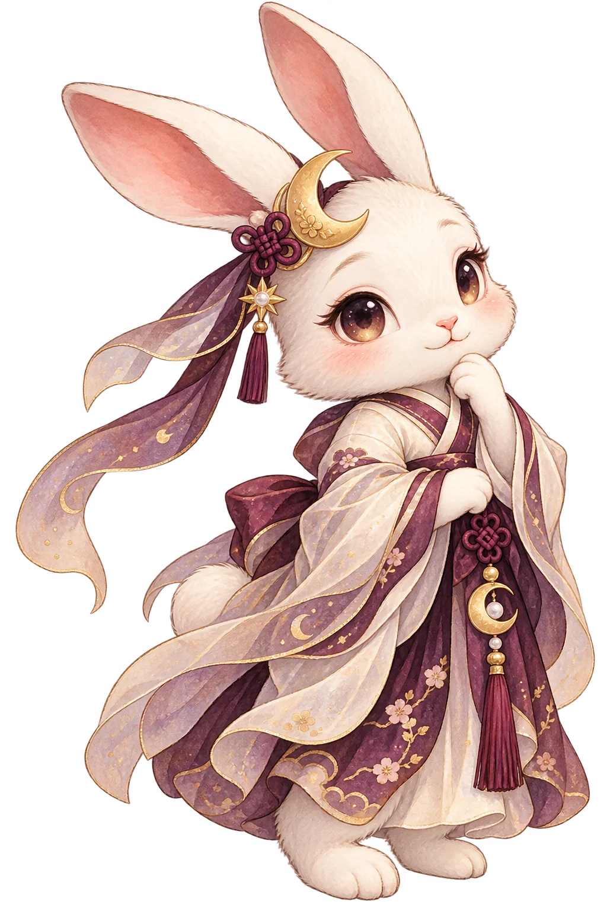

사주 · 꽃돼지 연이

대표 그림은 운세별로 고정합니다. 사주 연이와 자미 네오는 기존 캐릭터의 얼굴을 유지했습니다. 나머지 동물은 이번 보고서용 v1 자산입니다. 각 행은 동일 자산을 원본·보고서·작은 아이콘 크기로 검사한 시트입니다.



기존 네오의 상단 잘린 발 잔상을 제거한 전용 자산

실제 상담 카드 그림은 별도 카드 덱에서 표시합니다.
